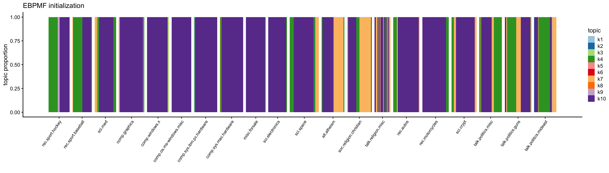
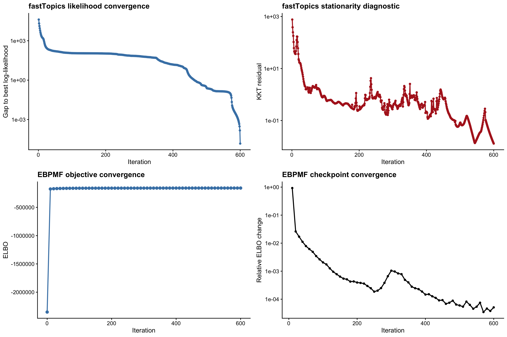
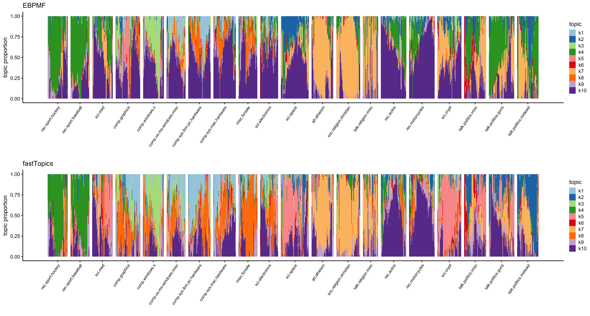
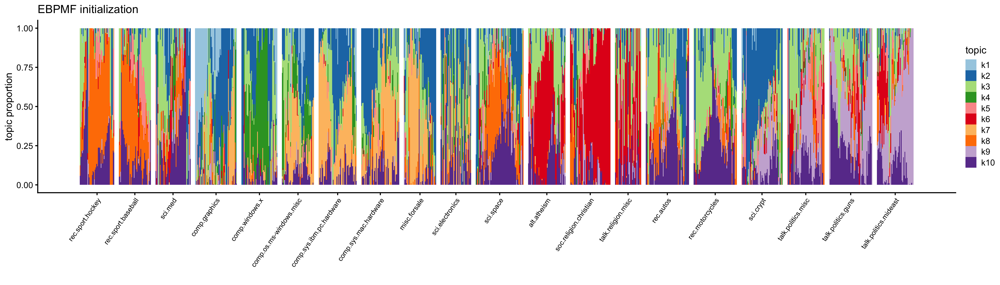
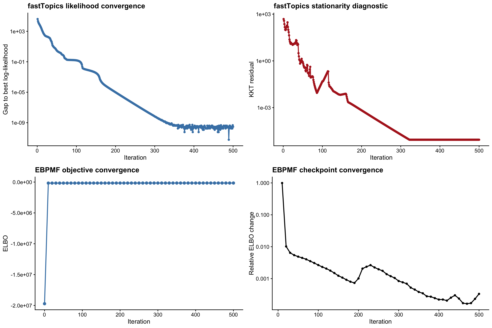
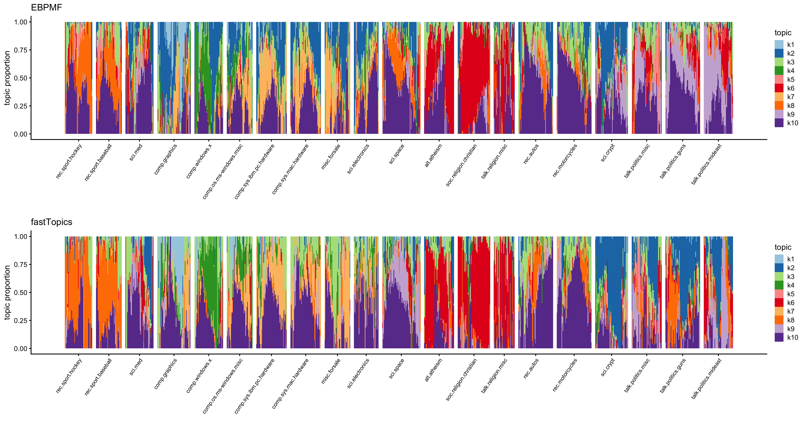

Last updated: 2026-09-24
Checks: 7 0
Knit directory: background/
This reproducible R Markdown analysis was created with workflowr (version 1.7.2). The Checks tab describes the reproducibility checks that were applied when the results were created. The Past versions tab lists the development history.
Great! Since the R Markdown file has been committed to the Git repository, you know the exact version of the code that produced these results.
Great job! The global environment was empty. Objects defined in the global environment can affect the analysis in your R Markdown file in unknown ways. For reproduciblity it’s best to always run the code in an empty environment.
The command set.seed(20260201) was run prior to running
the code in the R Markdown file. Setting a seed ensures that any results
that rely on randomness, e.g. subsampling or permutations, are
reproducible.
Great job! Recording the operating system, R version, and package versions is critical for reproducibility.
Nice! There were no cached chunks for this analysis, so you can be confident that you successfully produced the results during this run.
Great job! Using relative paths to the files within your workflowr project makes it easier to run your code on other machines.
Great! You are using Git for version control. Tracking code development and connecting the code version to the results is critical for reproducibility.
The results in this page were generated with repository version 0facd29. See the Past versions tab to see a history of the changes made to the R Markdown and HTML files.
Note that you need to be careful to ensure that all relevant files for
the analysis have been committed to Git prior to generating the results
(you can use wflow_publish or
wflow_git_commit). workflowr only checks the R Markdown
file, but you know if there are other scripts or data files that it
depends on. Below is the status of the Git repository when the results
were generated:
Ignored files:
Ignored: .DS_Store
Ignored: .RData
Ignored: .Rhistory
Ignored: .Rproj.user/
Ignored: analysis/.DS_Store
Untracked files:
Untracked: Rplots.pdf
Untracked: analysis/.ipynb_checkpoints/
Untracked: analysis/Untitled.ipynb
Untracked: analysis/gene_lst.txt
Untracked: analysis/gtex_processing.ipynb
Untracked: analysis/omim_topics_k=40.RData
Untracked: analysis/v1.Rmd
Untracked: analysis/v2.Rmd
Untracked: tests/
Untracked: writeup/
Unstaged changes:
Deleted: analysis/bg.Rmd
Modified: analysis/bg_implement.Rmd
Modified: analysis/bg_sim.Rmd
Modified: analysis/index.Rmd
Modified: analysis/main.Rmd
Deleted: analysis/omim.Rmd
Modified: background.Rproj
Deleted: code/README.md
Deleted: data/README.md
Note that any generated files, e.g. HTML, png, CSS, etc., are not included in this status report because it is ok for generated content to have uncommitted changes.
These are the previous versions of the repository in which changes were
made to the R Markdown (analysis/bg_newsbadsample.Rmd) and
HTML (docs/bg_newsbadsample.html) files. If you’ve
configured a remote Git repository (see ?wflow_git_remote),
click on the hyperlinks in the table below to view the files as they
were in that past version.
| File | Version | Author | Date | Message |
|---|---|---|---|---|
| Rmd | 0facd29 | jiheeyy | 2026-09-24 | wflow_publish(c("analysis/bg_news.Rmd", "analysis/bg_newsbadsample.Rmd")) |
Both models use the full document-by-term count matrix by default.
news <- load_news_data(
here("docs", "data", "newsgroups.RData"),
here("docs", "data", "20news-bydate", "train.map")
)However, the optional sample chunk selects random
documents and the most frequent words, then removes words absent from
those documents.
news <- sample_news_data(news, max_documents = 1000L, max_terms = 2000L)K <- 10L
a <- c(0.1, 1, 10, 100, 1000)
ebpmf_maxiter <- 600L
fasttopics_numiter <- 600L
X <- news$X
set.seed(1)
stopifnot(nrow(X) > 0L, ncol(X) > 0L, all(Matrix::colSums(X) > 0))
ebpmf_elapsed <- system.time({
state <- initialize_state(X, K, a, L_init = "deviance_kmeans")
initial_state <- state
ebpmf <- run_ebpmf_bg_cavi(
state, X, a, max_niter = ebpmf_maxiter, early_stop = FALSE
)
})[["elapsed"]]
fasttopics_elapsed <- system.time({
fasttopics <- fastTopics::fit_poisson_nmf(
X, k = K, numiter = fasttopics_numiter,
init.method = "random", verbose = "none"
)
})[["elapsed"]]
fits <- list(
ebpmf = ebpmf,
fasttopics = fasttopics,
dimensions = data.frame(documents = nrow(X), terms = ncol(X), topics = K),
timing = data.frame(
method = c("EBPMF-BG", "fastTopics"),
initialization = c("deviance k-means L; all-one F", "random"),
iterations = c(ebpmf$completed_niter, fasttopics_numiter),
elapsed_seconds = c(ebpmf_elapsed, fasttopics_elapsed)
)
)
fits$dimensions documents terms topics
1 1000 1998 10fits$timing method initialization iterations elapsed_seconds
1 EBPMF-BG deviance k-means L; all-one F 600 16.034
2 fastTopics random 600 12.853Both models are fitted to the same sparse matrix. Timings include initialization and fitting.
Document-topic proportions from the initial background model loadings, before CAVI updates.
plot_news_structure(initial_state$L, news$labels)
aligned <- align_news_models(fits)
aligned$alignment_table EBPMF_topic original_fastTopics_topic document_cosine word_cosine
1 k1 k3 0.58697324 0.8862485
2 k2 k7 0.71976317 0.9939216
3 k3 k6 0.90182363 0.9970638
4 k4 k10 0.71743570 0.9759416
5 k5 k4 0.05965663 0.8464650
6 k6 k9 0.89077861 0.9993605
7 k7 k2 0.91233426 0.9959010
8 k8 k1 0.42955638 0.7169074
9 k9 k8 0.79463104 0.8520278
10 k10 k5 0.75664852 0.9552429The assignment matches fastTopics to EBPMF using the average cosine similarity of document-topic proportions and word profiles.
For EBPMF topic k and fastTopics topic h, the matching score is \[ S_{kh}= \frac{ \operatorname{cosine}(\text{doc-topic-prop}^{E}_{\cdot k},\text{doc-topic-prop}^{F}_{\cdot h}) + \operatorname{cosine}(F^{E}_{\cdot k},F^{F}_{\cdot h}) }{2}. \] Topics match well when they have similar documents (in terms of topic contribution degree) and similar words.
plot_news_convergence(fits)
The fastTopics likelihood and EBPMF ELBO are different objectives; their magnitudes are not directly comparable.
# The same horizontal position represents different documents in the two panels.
plot_news_structure(aligned, news$labels, plot_sample = FALSE)
Both panels show the same sampled documents (sampled after full dataset fitting), grouped by observed newsgroup. Each model uses its own seeded 1D t-SNE ordering within each newsgroup for a smoother document topic graph. Therefore, the horizontal position does not represent same document in the two panels.
We don’t see k10 dominate anymore.
K <- 10L
a <- c(0.1, 1, 10, 100, 1000)
ebpmf_maxiter <- 500L
fasttopics_numiter <- 500L
X <- news$X
set.seed(1)
stopifnot(nrow(X) > 0L, ncol(X) > 0L, all(Matrix::colSums(X) > 0))
ebpmf_elapsed <- system.time({
state <- initialize_state(X, K, a, L_init = "fasttopics")
initial_state <- state
ebpmf <- run_ebpmf_bg_cavi(
state, X, a, max_niter = ebpmf_maxiter, early_stop = FALSE
)
})[["elapsed"]]
fasttopics_elapsed <- system.time({
fasttopics <- fastTopics::fit_poisson_nmf(
X, k = K, numiter = fasttopics_numiter,
init.method = "random", verbose = "none"
)
})[["elapsed"]]
fits <- list(
ebpmf = ebpmf,
fasttopics = fasttopics,
dimensions = data.frame(documents = nrow(X), terms = ncol(X), topics = K),
timing = data.frame(
method = c("EBPMF-BG", "fastTopics"),
initialization = c("deviance k-means L; all-one F", "random"),
iterations = c(ebpmf$completed_niter, fasttopics_numiter),
elapsed_seconds = c(ebpmf_elapsed, fasttopics_elapsed)
)
)
fits$dimensions documents terms topics
1 1000 1998 10fits$timing method initialization iterations elapsed_seconds
1 EBPMF-BG deviance k-means L; all-one F 500 16.419
2 fastTopics random 500 10.678Both models are fitted to the same sparse matrix. Timings include initialization and fitting.
Document-topic proportions from the initial background model loadings, before CAVI updates.
plot_news_structure(initial_state$L, news$labels)
aligned <- align_news_models(fits)
aligned$alignment_table EBPMF_topic original_fastTopics_topic document_cosine word_cosine
1 k1 k7 0.9507539 0.9987409
2 k2 k6 0.2647458 0.8729111
3 k3 k1 0.9119758 0.9830561
4 k4 k4 0.9169711 0.9984860
5 k5 k5 0.8434750 0.9931427
6 k6 k9 0.9751527 0.9990256
7 k7 k10 0.9645142 0.9971248
8 k8 k3 0.6752249 0.9456342
9 k9 k8 0.5712594 0.9905544
10 k10 k2 0.8217747 0.9804380The assignment matches fastTopics to EBPMF using the average cosine similarity of document-topic proportions and word profiles.
For EBPMF topic k and fastTopics topic h, the matching score is \[ S_{kh}= \frac{ \operatorname{cosine}(\text{doc-topic-prop}^{E}_{\cdot k},\text{doc-topic-prop}^{F}_{\cdot h}) + \operatorname{cosine}(F^{E}_{\cdot k},F^{F}_{\cdot h}) }{2}. \] Topics match well when they have similar documents (in terms of topic contribution degree) and similar words.
plot_news_convergence(fits)
The fastTopics likelihood and EBPMF ELBO are different objectives; their magnitudes are not directly comparable.
# The same horizontal position represents different documents in the two panels.
plot_news_structure(aligned, news$labels, plot_sample = FALSE)
Both panels show the same sampled documents (sampled after full dataset fitting), grouped by observed newsgroup. Each model uses its own seeded 1D t-SNE ordering within each newsgroup for a smoother document topic graph. Therefore, the horizontal position does not represent same document in the two panels.
sessionInfo()R version 4.6.1 (2026-06-24)
Platform: aarch64-apple-darwin23
Running under: macOS Tahoe 26.6.2
Matrix products: default
BLAS: /System/Library/Frameworks/Accelerate.framework/Versions/A/Frameworks/vecLib.framework/Versions/A/libBLAS.dylib
LAPACK: /Library/Frameworks/R.framework/Versions/4.6/Resources/lib/libRlapack.dylib; LAPACK version 3.12.1
locale:
[1] en_US.UTF-8/en_US.UTF-8/en_US.UTF-8/C/en_US.UTF-8/en_US.UTF-8
time zone: America/Chicago
tzcode source: internal
attached base packages:
[1] stats graphics grDevices utils datasets methods base
other attached packages:
[1] fastTopics_0.7-38 cowplot_1.2.0 ggplot2_4.0.3 Matrix_1.7-5
[5] here_1.0.2 workflowr_1.7.2
loaded via a namespace (and not attached):
[1] gtable_0.3.6 xfun_0.60 bslib_0.11.0
[4] htmlwidgets_1.6.4 processx_3.9.0 ggrepel_0.9.8
[7] lattice_0.22-9 callr_3.8.0 quadprog_1.5-8
[10] vctrs_0.7.3 tools_4.6.1 generics_0.1.4
[13] parallel_4.6.1 tibble_3.3.1 pkgconfig_2.0.3
[16] data.table_1.18.4 SQUAREM_2026.1 RColorBrewer_1.1-3
[19] S7_0.2.2 RcppParallel_5.1.11-2 lifecycle_1.0.5
[22] truncnorm_1.0-9 compiler_4.6.1 farver_2.1.2
[25] stringr_1.6.0 git2r_0.36.2 progress_1.2.3
[28] RhpcBLASctl_0.23-42 getPass_0.2-4 httpuv_1.6.17
[31] htmltools_0.5.9 sass_0.4.10 yaml_2.3.12
[34] lazyeval_0.2.3 plotly_4.12.0 crayon_1.5.3
[37] tidyr_1.3.2 later_1.4.8 pillar_1.11.1
[40] jquerylib_0.1.4 whisker_0.4.1 uwot_0.2.4
[43] cachem_1.1.0 gtools_3.9.5 tidyselect_1.2.1
[46] digest_0.6.39 Rtsne_0.17 stringi_1.8.7
[49] reshape2_1.4.5 purrr_1.2.2 dplyr_1.2.1
[52] ashr_2.2-63 labeling_0.4.3 rprojroot_2.1.1
[55] fastmap_1.2.0 grid_4.6.1 cli_3.6.6
[58] invgamma_1.2 magrittr_2.0.5 withr_3.0.3
[61] prettyunits_1.2.0 scales_1.4.0 promises_1.5.0
[64] rmarkdown_2.31 httr_1.4.8 otel_0.2.0
[67] hms_1.1.4 pbapply_1.7-4 evaluate_1.0.5
[70] knitr_1.51 viridisLite_0.4.3 irlba_2.3.7
[73] rlang_1.3.0 Rcpp_1.1.2 mixsqp_0.3-54
[76] glue_1.8.1 rstudioapi_0.19.0 jsonlite_2.0.0
[79] plyr_1.8.9 R6_2.6.1 fs_2.1.0